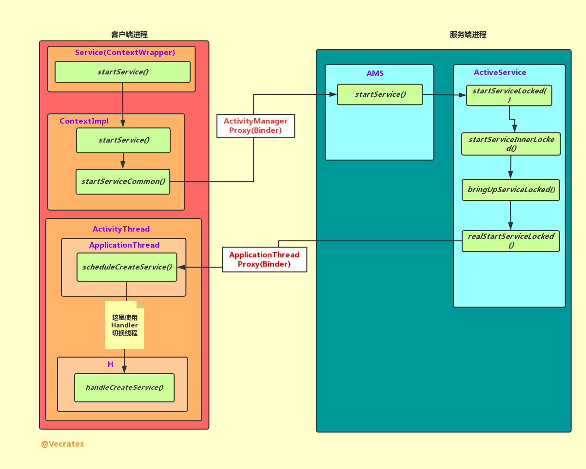
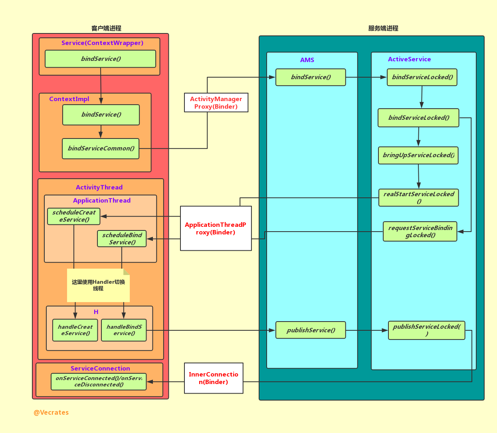

【Android】Service 启动过程
概述
同为四大组件之一，Service 的启动流程和 Activity 有很多的相似之处，它们的启动都需要系统进程的服务端对象 AMS（ActivityManagerService） 的参与，也都使用 Binder（Binder 对象也一致）进行 IPC 等。
Service 有两种启动方式：startService() 和 bindService() ，两者的区别是后者可与启动者进行交互，而
前者不行，所以两种启动方式的启动过程是有一些区别的。
startService() 启动过程

上图为以 startService() 方式启动 Service 的流程，可以看到客户端的参与者和 Activity 极其相似，IPC 使用的 Binder 对象则是一致的，且而服务端也同需要 AMS 的参与。
由于 Service 继承自 ContextWrapper，所以 startService() 调用的是 ContextWrapper 的方法。在 startService 中是直接调用了 Context 的 startService() ，Context 的实现类是 ContextImpl，ContextImpl 则是在 Activity 创建绑定上下文之前创建的（在 perfromLaunchActivity() 中)。
ContextImpl 的 startService() 中直接调用了自身的 startServiceCommon() 方法：
private ComponentName startServiceCommon(Intent service, UserHandle user) {
try {
validateServiceIntent(service);
service.prepareToLeaveProcess(this);
//这里调用了 AMS 的方法
ComponentName cn = ActivityManagerNative.getDefault().startService(
mMainThread.getApplicationThread(), service, service.resolveTypeIfNeeded(
getContentResolver()), getOpPackageName(), user.getIdentifier());
if (cn != null) {
if (cn.getPackageName().equals("!")) {
throw new SecurityException(
"Not allowed to start service " + service
+ " without permission " + cn.getClassName());
} else if (cn.getPackageName().equals("!!")) {
throw new SecurityException(
"Unable to start service " + service
+ ": " + cn.getClassName());
}
}
return cn;
} catch (RemoteException e) {
throw e.rethrowFromSystemServer();
}
}
代码中的 ActivityManagerNative.getDetault() 得到的是 AMS 在客户端的代理 ActivityManagerProxy，它实现了 IActivityManager 接口。这里所传的参数：
- IApplicationThread（caller），它继承了跨进程同样接口 IInterface，它的实现类是 ApplicationThread，用于服务端向客户端返回信息
- Intent（service），携带 Service 信息
所以以上流程已经完成了启动 Service 前的准备工作，启动流程将从这里传到系统进程的 AMS 当中。
public ComponentName startService(IApplicationThread caller, Intent service,
String resolvedType, String callingPackage, int userId)
throws TransactionTooLargeException {
...
ComponentName res = mServices.startServiceLocked(caller, service,
resolvedType, callingPid, callingUid, callingPackage, userId);
...
}
mService 是一个 ActiveService 对象，负责辅助 AMS 管理 Service 的启动、绑定和停止等，这里调用了它的 startServiceLocked() 方法：
ComponentName startServiceLocked(IApplicationThread caller, Intent service, String resolvedType, int callingPid, int callingUid, String callingPackage, final int userId)
throws TransactionTooLargeException {
...
//根据 service（Intent）检索是否已经存在 ServiceRecord，不存在创建新的
ServiceLookupResult res =
retrieveServiceLocked(service, resolvedType, callingPackage,
callingPid, callingUid, userId, true, callerFg, false);
...
//ServiceRecord 用于描述一个 Service
ServiceRecord r = res.record;
...
return startServiceInnerLocked(smap, service, r, callerFg, addToStarting);
}
这里 ActiveService 调用了自身的 startServiceInnerLocked() 方法，在该方法内部又调用了自身的 bringUpServiceLocked() ，接着用调用了 realStartServiceLocked()：
private final void realStartServiceLocked(ServiceRecord r,
ProcessRecord app, boolean execInFg) throws RemoteException {
...
//调用了 ApplicationThreadProxy 的方法
app.thread.scheduleCreateService(r, r.serviceInfo,
mAm.compatibilityInfoForPackageLocked(r.serviceInfo.applicationInfo),
app.repProcState);
...
//这个方法里面也是一个 Binder 调用，调用了 Service 的 startCommand() 等
sendServiceArgsLocked(r, execInFg, true);
...
}
private final void sendServiceArgsLocked(ServiceRecord r, boolean execInFg,
boolean oomAdjusted) throws TransactionTooLargeException {
...
//同样调用了 ApplicationThreadProxy 的方法
r.app.thread.scheduleServiceArgs(r, si.taskRemoved, si.id, flags, si.intent);
...
}
上面这个方法中，app.thread 是一个 ApplicationThreadProxy 对象，它是 ApplicationThreadNative 在服务端的代理，它继承了 Binder 及实现了 IApplicationThread 接口，而 ApplicationThreadNative 类是一个抽象类，ApplicationThread 继承了 ApplicationThreadNative，故而 ApplicationThread 是 IApplicationThread 的最终实现者。
所以执行到这儿，服务端将通过 Binder 将信息返回给客户端 ApplicationThread，由于此时是在 Binder 线程池中的线程运行，故先使用 Hnadler 切换到主线程，最后执行：
private void handleCreateService(CreateServiceData data) {
...
//1. 使用加载器创建 Service 实例
java.lang.ClassLoader cl = packageInfo.getClassLoader();
service = (Service) cl.loadClass(data.info.name).newInstance();
...
//2. 创建上下文对象
ContextImpl context = ContextImpl.createAppContext(this, packageInfo);
context.setOuterContext(service);
//3. 创建 Application 实例
Application app = packageInfo.makeApplication(false, mInstrumentation);
//4. 为 Service 绑定上下文，并调用器 onCreate() 方法
service.attach(context, this, data.info.name, data.token, app,
ActivityManagerNative.getDefault());
service.onCreate();
// 放到了一个 map 中存储，可以看到下面一个方法从 map 从取了出来
mServices.put(data.token, service);
...
}
private void handleServiceArgs(ServiceArgsData data) {
Service s = mServices.get(data.token);
...
res = s.onStartCommand(data.args, data.flags, data.startId);
...
}
handleCreateService() 是 scheduleCreateService() 调用线上的方法，主要完成：
- 使用加载器创建 Service 实例
- 创建上下文对象
- 创建 Application 实例
- 为 Service 绑定上下文，并调用器 onCreate() 方法
handleServiceArgs() 是 scheduleServiceArgs() 调用线上的方法，主要调用了 Service 的 onStartSCommand() 方法。
bindService() 启动过程

上图为以 bindService() 方式启动 Service 的过程，大体上可以分为创建和绑定两个过程，创建过程与以 startService() 方式启动的过程是大致是一样的，这里主要记录绑定的过程。
在使用 bindService() 时，通常会传入一个 ServiceConnection 对象，当调用者和 Service 绑定成功时，调用该 ServiceConnection 对象的 onServiceConnected() 。这个 ServiceConnection 对象会在 bindServiceCommon() 中被转化为 ServiceDispatcher.InnerConnection 对象：
//ContextImpl.class
private boolean bindServiceCommon(Intent service, ServiceConnection conn, int flags, Handler
handler, UserHandle user) {
IServiceConnection sd;
...
//将 ServiceConnetion 转化为 IServiceConnection（实际返回的是 InnerConnection）
sd = mPackageInfo.getServiceDispatcher(conn, getOuterContext(), handler, flags);
...
//转到 AMS 执行
int res = ActivityManagerNative.getDefault().bindService(
mMainThread.getApplicationThread(), getActivityToken(), service,
service.resolveTypeIfNeeded(getContentResolver()),
sd, flags, getOpPackageName(), user.getIdentifier());
...
}
public final IServiceConnection getServiceDispatcher(ServiceConnection c,
Context context, Handler handler, int flags) {
synchronized (mServices) {
LoadedApk.ServiceDispatcher sd = null;
ArrayMap<ServiceConnection, LoadedApk.ServiceDispatcher> map = mServices.get(context);
//查找是否存在对应的 ServiceDispatcher
if (map != null) {
sd = map.get(c);
}
if (sd == null) {
sd = new ServiceDispatcher(c, context, handler, flags);
if (map == null) {
map = new ArrayMap<ServiceConnection, LoadedApk.ServiceDispatcher>();
mServices.put(context, map);
}
//ServiceConnection - ServiceDispatcher 键值对
map.put(c, sd);
} else {
sd.validate(context, handler);
}
return sd.getIServiceConnection();
}
}
private final ServiceDispatcher.InnerConnection mIServiceConnection;
IServiceConnection getIServiceConnection() {
return mIServiceConnection;
}
private static class InnerConnection extends IServiceConnection.Stub {}
static abstract class Stub extends android.os.Binder implements android.app.IServiceConnection {}
ServiceConnection 对象和 ServiceDispatcher 对象组成键值对，存储在一个 ArrayMap 中，ServiceDispatcher 中持有 InnerConnection 对象，InnerConnection 是 ServiceDispatcher 的内部类，继承自 Binder。
当服务转到 AMS 后，除了绑定操作外，其他的执行过程和 startService() 基本一致。而绑定过程从 bindServiceLocked() 开始，其中调用了 requestServiceBindingLocked() ：
private final boolean requestServiceBindingLocked(ServiceRecord r, IntentBindRecord i,
boolean execInFg, boolean rebind) throws TransactionTooLargeException {
...
r.app.thread.scheduleBindService(r, i.intent.getIntent(), rebind, r.app.repProcState);
...
}
在 requestServiceBindingLocked() 中，调用了 ApplicationThread 的 scheduleBindService() ，scheduleBindService() 内部又使用 Handler 切换线程，最后调用了 handleBindService() ：
private void handleBindService(BindServiceData data) {
Service s = mServices.get(data.token);
...
IBinder binder = s.onBind(data.intent);
//又交给了 AMS
ActivityManagerNative.getDefault().publishService(data.token, data.intent, binder);
...
}
这里首先调用了 Service 的 onBind() 方法，onBind() 返回 IBinder 对象之后再交给系统进程的 AMS 执行，AMS 又调用了 ActiveService 的 publishServiceLocked() ：
void publishServiceLocked(ServiceRecord r, Intent intent, IBinder service) {
...
c.conn.connected(r.name, service);
...
}
这里的 c.conn 就是上文提到的 InnerConnection，这里调用了它的 connected() 方法：
//InnerConnection.class
public void connected(ComponentName name, IBinder service) throws RemoteException {
LoadedApk.ServiceDispatcher sd = mDispatcher.get();
if (sd != null) {
//由 InnerConnection 对象发起调用
sd.connected(name, service);
}
}
//ServiceDispatcher.class
public void connected(ComponentName name, IBinder service) {
if (mActivityThread != null) {
mActivityThread.post(new RunConnection(name, service, 0));
} else {
doConnected(name, service);
}
}
public void doConnected(ComponentName name, IBinder service) {
...
// If there was an old service, it is not disconnected.
if (old != null) {
//ServiceConnection 的 onServiceDisconnection 被调用
mConnection.onServiceDisconnected(name);
}
// If there is a new service, it is now connected.
if (service != null) {
//ServiceConnection 的 onServiceConnection 被调用
mConnection.onServiceConnected(name, service);
}
}
当调用者与 Service 建立连接后，系统进程调用 InnerConnetion 对象的 connetion() ，最后通过 ServiceDispatcher 调用 ServiceConnetion 的 onServiceConnetion() 或者 onServiceDisconnetion() ，InnerConnection 的调用有可能是跨进程的，故而需要 InnerConnetion 继承自 Binder。
参考或拓展
- 《Android 开发艺术探索》